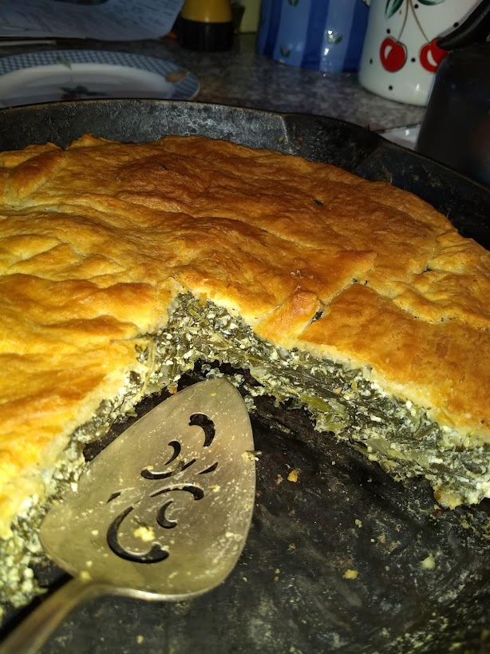

Spinach Pie Directions
- Preheat oven to 350F/175C
-
Defrost and drain the spinach. You don't want it to be too wet!
- Beat eggs in a bowl, then stir in crumbled feta.
-
Sautee garlic and onion in olive oil in your cast iron skillet on medium
to medium-high heat until softened.
-
Add the spinach, black pepper, and dill. Continue sauteeing to combine
and start cooking the spinach.
-
Remove from heat or just turn off the
burner to avoid cooking the eggs too fast.
-
Add the egg and feta mixture and fold it into the spinach mixture to
combine, then smooth it out.
-
Open the crescent rolls and unroll the sheet of dough, then place on top to form a
crust. You may need to trim or piece together the dough to cover
completely.
-
Optional: Brush the top with olive oil.
- Bake for about 20 minutes, or until the crust is nicely browned. The filling should be fully cooked, but if you like you can use a food thermometer to make sure it's at 165F for egg safety.
- Let cool for a few minutes to finish setting, then cut and serve!
Here's what the inside looks like!

Nutrition Facts
| Servings |
4-6 |
| Calories |
Who Knows? |
| Difficulty |
Easy |
| Time |
30-40 mins total |
| Popeye |
Approves! |
Click these links for the Ingredients and
Homepage.